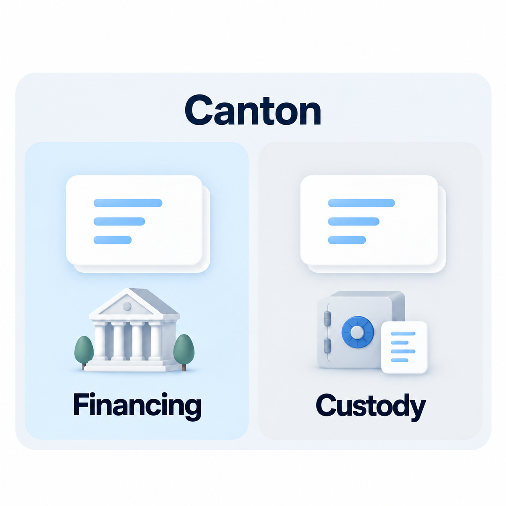
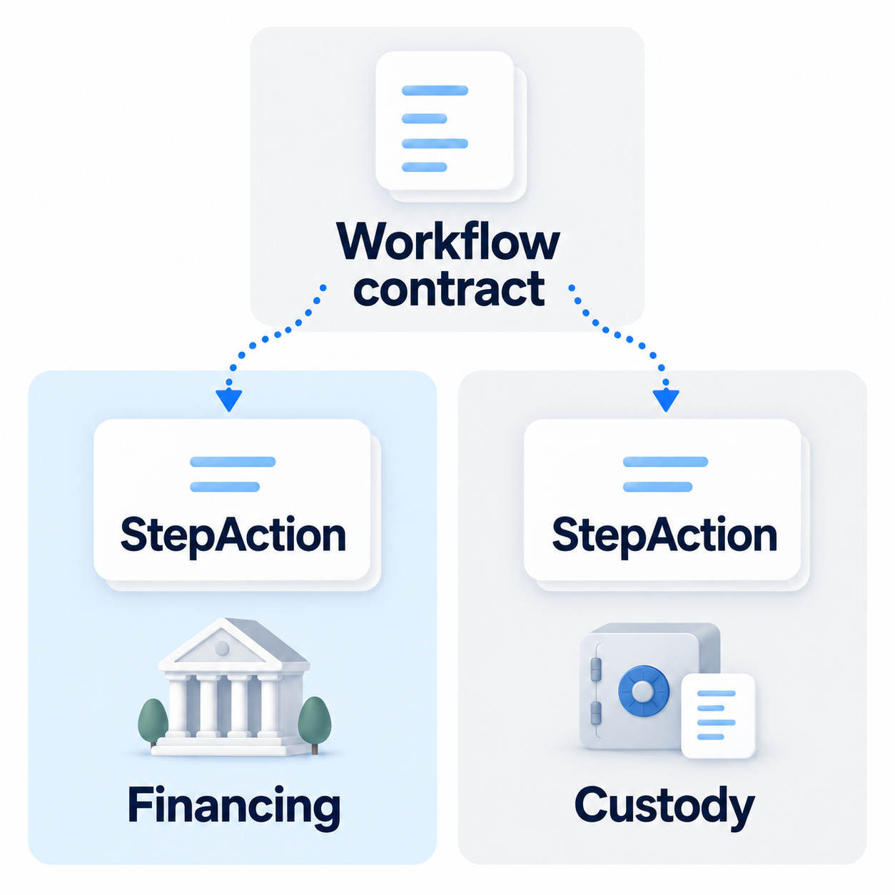
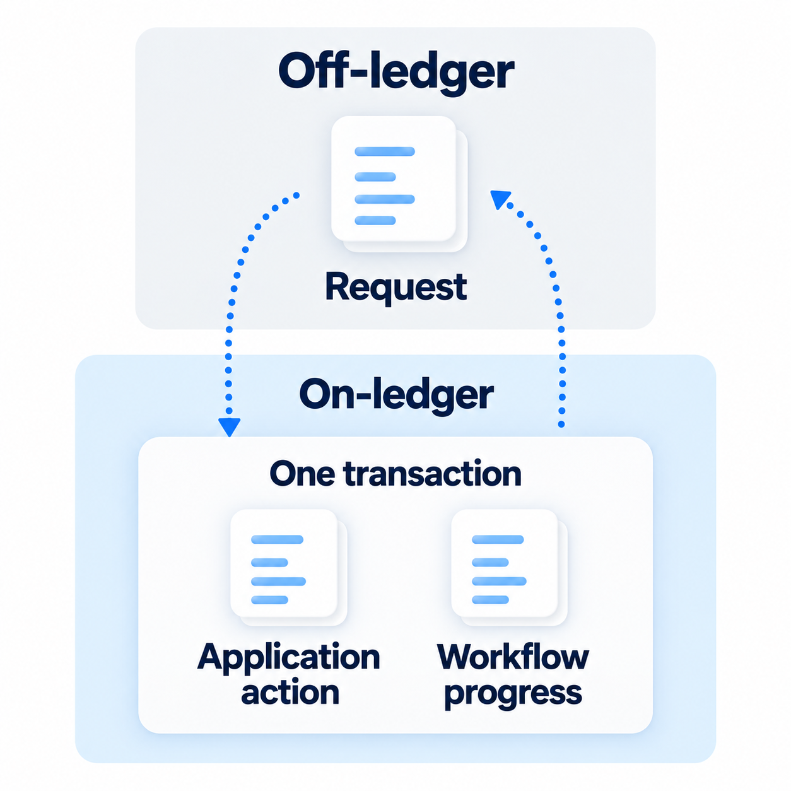

Harmonia architecture
Contracts on Canton
Canton lets organizations transact through Daml smart contracts while controlling who can see their data. Banks are using this technology: Lloyds reported a tokenised-deposit pilot on Canton.

Here, a financing contract can approve a loan; a custody contract can release an asset. Each application controls its own rules and permissions.
Harmonia gives them a shared interface
Canton already supports transactions across applications. Harmonia gives participating contracts a common interface, StepAction, so a workflow can coordinate their actions without importing each application's implementation.

The workflow selects an eligible action, checks who may execute it, and calls the shared ExecuteAction operation. The application's own permissions still apply.
Request off-ledger, execute on-ledger
Off-ledger software submits requests and reads confirmed results. On-ledger contracts enforce both the workflow and application rules.

An application action and that step's progress commit together. If either fails, neither change is recorded.
An application can implement the interface directly. For supported existing applications, Builder generates an adapter off-ledger from a reviewed mapping. That adapter implements the interface and runs on-ledger, leaving the original application unchanged.
Project basis: Development Fund Proposal, Abstract and §2, checked against the current implementation.